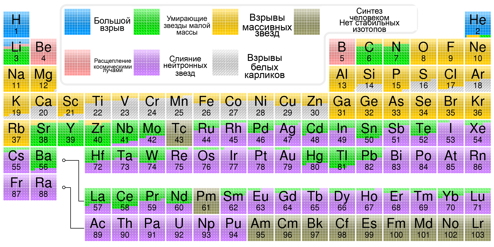
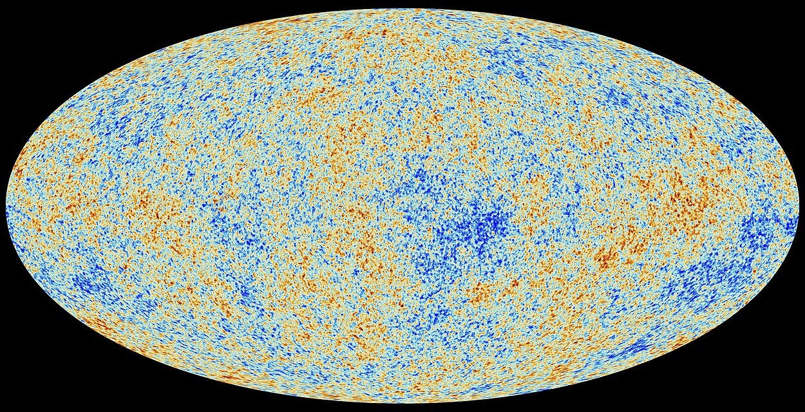

bbnLectureGrid = FileAttachment("bbn-game/data/bbn_grid.json").json()
bbnLectureApp = {
if (!window.BBNGrid || !window.BBNUI) {
const node = document.createElement("div");
node.className = "bbn-game bbn-game-error";
node.innerHTML = "<div class='bbn-error-title'>JS-модули не загрузились</div><p class='bbn-error-text'>Проверь bbn-game/js/bbn-grid.js и bbn-game/js/bbn-ui.js.</p>";
return node;
}
const app = window.BBNUI.createApp(bbnLectureGrid, {
className: "bbn-game-slide",
showUniverseButton: true,
showAutoButtons: true,
initial: {eta10: 3.0, S: 0.82, tau_n: 800},
footerHtml: `
<a href="https://neutrinohit.github.io/sciencepop/BirthAndLifeUniverse/bbn-game/bbn_applet.html">Открыть аплет</a>
<span>Вычисления основаны на пакете <a href="https://github.com/vallima/PRyMordial">PRyMordial</a></span>
`
});
invalidation.then(() => {
if (app.cleanup) app.cleanup();
});
return app;
}Рождение и жизнь одной Вселенной
Д. В. Наумов
Научно-популярная лекция для горожан
Научно-популярная лекция для горожан

NASA, ESA, CSA, STScI / Webb First Deep Field
Глава 1. Почему ночью небо темное?
вопрос
Почему ночью небо темное?
На первый взгляд ответ очевиден: Солнце за горизонтом. Но тогда остается более глубокий вопрос.
модель
Представим вечную и статическую Вселенную
Звезды равномерно заполняют пространство. Наблюдатель смотрит в любую сторону.
звездные оболочки
Чем дальше слой, тем больше в нем звезд
Дальние звезды слабее, но самих звезд в дальнем слое больше. В простейшей картине эти эффекты компенсируются.
тот же угол зрения -> площадь слоя растет как r²
парадокс
С каждым новым слоем небо становится ярче
Если слоев бесконечно много, почти каждый луч зрения должен встретить поверхность какой-нибудь звезды.
предел
Небо должно быть почти сплошной поверхностью звезды
Такой была бы ночь в бесконечной, вечной и неподвижной Вселенной.
реальность
Но в реальности небо темное
Значит, одна из исходных догадок неверна. А на самом деле неверны сразу две: Вселенная не вечная и не статическая.
Темная ночь говорит о биографии Вселенной
ответ
Ночь темная, потому что Вселенная имеет историю
Это уже не статическая декорация, а развивающаяся система с началом горячей плотной стадии.
1
Конечный возрастСвет от слишком далеких областей еще не успел дойти.
2
РасширениеСвет растягивается, краснеет и приносит меньше энергии.
3
Звезды зажглись не сразуБыла темная эпоха: атомы уже были, а звезд еще не было.
Глава 2. Вселенная расширяется
Что означает, что Вселенная расширяется?
А. Расстояния между галактиками увеличиваются
Б. Вселенная набирает вес
В. Галактики разлетаются от общего центра
Что означает, что Вселенная расширяется?
А. Расстояния между галактиками увеличиваются
Б. Вселенная набирает вес
В. Галактики разлетаются от общего центра
Красное и голубое смещение
Свет от галактик раскладывают в спектр, как белый свет в радугу.
- Если источник удаляется, волна растягивается: линии уходят к красному.
- Если источник приближается, волна сжимается: линии уходят к синему.
- Для далеких галактик почти везде видим красное смещение.
Закон Хаббла
Эдвин Хаббл увидел простую закономерность: чем дальше галактика, тем быстрее растет расстояние до нее.
\[ v = H_0 d \]
- \(d\) - расстояние до галактики.
- \(v\) - скорость удаления по красному смещению.
- \(H_0\) - сегодняшняя скорость расширения Вселенной.
Все галактики удаляются от нас. Мы в центре Вселенной?
А. Да
Б. Нет
В. Не все так однозначно
Все галактики удаляются от нас. Мы в центре Вселенной?
Короткий ответ: нет. Но есть важная оговорка.
А. Да
Б. Нет
В. Не все так однозначно
Физического центра расширения нет. Но каждый наблюдатель находится в центре своей наблюдаемой области: свет приходит к нему со всех сторон.
Что видит наблюдатель на поверхности?
Назад во времени
Сегодня
Вселенная большая и продолжает расширяться. Вчера она была почти такой же, но чуть меньше.
1 млрд лет назад
Масштаб уже был немного меньше.
10 млрд лет назад
Расстояния между будущими галактиками были гораздо меньше.
Самое начало
Наш наблюдаемый кусок Вселенной был сжат почти в точку.
сегодня
раньше
еще раньше
?
почти самое начало
Что случилось в самом начале?
А. Большой Взрыв
Б. Большой Хлопок
В. Ничего не было
Что случилось в самом начале?
А. Большой Взрыв
Б. Большой Хлопок
В. Ничего не было
Сколько лет назад родилась Вселенная?
А. 100 тысяч
Б. 13.8 · 10⁹
В. ∞
Сколько лет назад родилась Вселенная?
А. 100 тысяч
Б. 13.8 · 10⁹
В. ∞
Глава 3. История Вселенной
Глава 4. Происхождение химических элементов
Легкие химические элементы
Через несколько минут после начала расширения во Вселенной уже были:
- свет
- протоны
- нейтроны
- электроны
- нейтрино
Но атомов ещё не было. Были только отдельные частицы и очень горячее излучение.
Когда стало достаточно прохладно, протоны и нейтроны начали собираться в лёгкие ядра.
Первые 20 минут
- водород — остался главным веществом
- гелий — примерно четверть обычного вещества по массе
- немного дейтерия
- совсем мало лития и бериллия
Это важно: первые звёзды родились не из чистого водорода, а из смеси водорода и гелия.
Дейтерий стал следом первых минут: звёзды его в основном уничтожают.
Как начался синтез?
- Сначала были почти только протоны и нейтроны.
- Первый устойчивый шаг: протон + нейтрон → дейтерий.
- Пока было слишком горячо, фотоны сразу разбивали дейтерий обратно.
- Когда Вселенная остыла, дейтерий начал выживать, и реакции быстро пошли дальше к гелию-4.
\[ p+n\rightarrow \mathrm{D}+\gamma \]
\[ \mathrm{D}\rightarrow {}^3\mathrm{He},\,{}^3\mathrm{H}\rightarrow {}^4\mathrm{He} \]
Первичный нуклеосинтез: окно синтеза
От чего зависят количества лёгких ядер?
Гелий-4 показывает, сколько нейтронов дожило до открытия дейтериевого горлышка:
\[ R_\mathrm{He} \simeq \frac{2(n/p)}{1-(n/p)}. \] При \(n/p=1/7\) получаем \[ R_\mathrm{He} \simeq 0.33. \]
Быстрее расширение или дольше жизнь нейтрона → больше нейтронов → больше гелия.
Дейтерий сильнее всего чувствует плотность обычного вещества.
Больше барионов → реакции идут эффективнее → дейтерий быстрее сгорает в гелий:
\[ \eta \uparrow \Rightarrow \mathrm{D/H} \downarrow. \]
Игра Синтезируй сам лёгкие элементы
аплет для телефона
Подберите плотность обычного вещества, скорость расширения и время жизни нейтрона.
Цель: провести четыре маркера через ворота для гелия-4, дейтерия, гелия-3 и лития-7.
neutrinohit.github.io/sciencepop/BirthAndLifeUniverse/bbn-game/bbn_applet.html
Происхождение золота
Происхождение золота
И других химических элементов

Источник исходного рисунка: Википедия
Глава 5. Образование галактик
Открытые вопросы
- Крупно-масштабные структуры галактик
- Разнообразие структур
Hubble-de Vaucouleurs diagram
Открытые вопросы
- Крупно-масштабные структуры галактик
- Разнообразие структур
- Влияние сверхмассивных черных дыр на галактики
Иллюстрация обратной связи сверхмассивной чёрной дыры
Образование галактик
Illustris Simulation
Викторина
Полный вес видимой Вселенной
∞
0
1053 кг
Число атомов в видимой Вселенной
6 · 1023
∞
1080
Число галактик в видимой Вселенной
≈ 1011
≈ 1022
2 · 1012
Число звезд в видимой Вселенной
≈ 1023
≈ 1010
∞
Средняя плотность числа атомов в видимой Вселенной, штук/м3
≈ 0.4
6 · 1023
0
Викторина
Полный вес видимой Вселенной
1053 кг
Число атомов в видимой Вселенной
1080
Число галактик в видимой Вселенной
≈ 1011
Число звезд в видимой Вселенной
≈ 1023
Средняя плотность числа атомов в видимой Вселенной, штук/м3
≈ 0.4
Глава 6. Темная материя
Викторина
Что такое темная материя?
А. Вид шоколада
Б. Вещество, которое не светится
В. Обратная сторона Луны
Викторина
Что такое темная материя?
А. Вид шоколада
Б. Вещество, которое не светится
В. Обратная сторона Луны
Энергетический баланс Вселенной
Энергетический баланс Вселенной
-
Без темной материи невозможно понять галактики:
- разлетались бы вместо наблюдаемого вращения;
- не смогли бы образоваться;
- не двигались бы так, как движутся.
-
Гравитационное линзирование:
- реликтового излучения;
- наблюдаемой структуры Вселенной;
- образования и эволюции галактик;
- при столкновении галактик;
- движении галактик в кластерах галактик.
Плотность энергии во Вселенной
72%
23%
5%
Темная материя
Темная энергия
Атомы
Темная материя видна гравитацией
Гравитационные свидетельства тёмной материи
Глава 7. Темная энергия
Реликтовый свет

Коллаборация Планк
Реликтовый свет
Расширение ускоряется
В конце XX века оказалось, что расширение Вселенной сейчас ускоряется.
Это признак наличия темной энергии во Вселенной.
Глава 8. Будущее
Будущее нашей Вселенной
Возможные сценарии
А. Большое замерзание
Вселенная замерзнет
Б. Большой разрыв
Вселенную разорвет
В. Большое схлопывание
Вселенная начнет сжиматься в точку
Будущее нашей Вселенной
Возможные сценарии
А. Большое замерзание
Вселенная замерзнет
Б. Большой разрыв
Вселенную разорвет
В. Большое схлопывание
Вселенная начнет сжиматься в точку
Раньше будет вот что
Раньше будет вот что
Большое нагревание Солнечной Системы
Сегодня
Раньше будет вот что
Раньше будет вот что
Большое нагревание Солнечной Системы
1 миллиард лет
Раньше будет вот что
Раньше будет вот что
Большое нагревание Солнечной Системы
2 миллиарда лет
Раньше будет вот что
Раньше будет вот что
Большое нагревание Солнечной Системы
3 миллиарда лет
Раньше будет вот что
Раньше будет вот что
Большое нагревание Солнечной Системы
4 миллиарда лет
Раньше будет вот что
Раньше будет вот что
Большое нагревание Солнечной Системы
5 миллиардов лет
Раньше будет вот что
Раньше будет вот что
Большое нагревание Солнечной Системы
5.5 миллиардов лет
Раньше будет вот что
Раньше будет вот что
Большое нагревание Солнечной Системы
6 миллиардов лет
Раньше будет вот что
Раньше будет вот что
Большое нагревание Солнечной Системы
6.5 миллиардов лет
Глава 9. Космология - живая наука
James Webb Space Telescope
JWST — космический телескоп, запущенный в декабре 2021 года.
- Найдена самая далёкая галактика: JADES-GS-z14-0:
- Она образовалась всего через 300 млн лет после Большого взрыва.
- масса звёзд — порядка сотен миллионов масс Солнца.
- Ранние галактики оказались ярче и многочисленнее, чем ожидали
- “Маленькие красные точки”:
- Возможно, это чёрные дыры
Как так быстро возникали яркие галактики, пыль, тяжёлые элементы и массивные чёрные дыры?